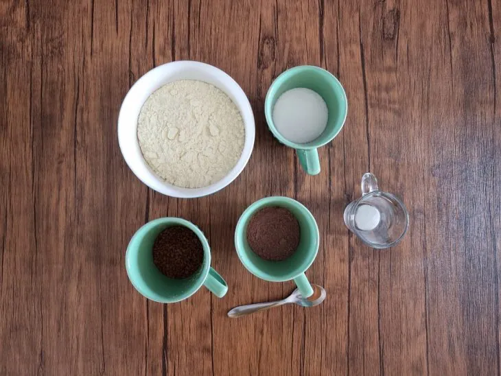
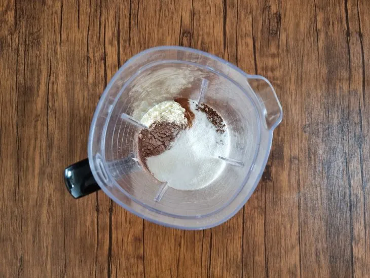
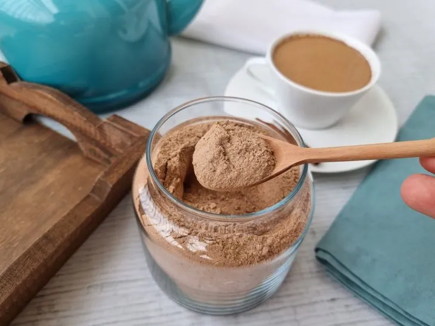
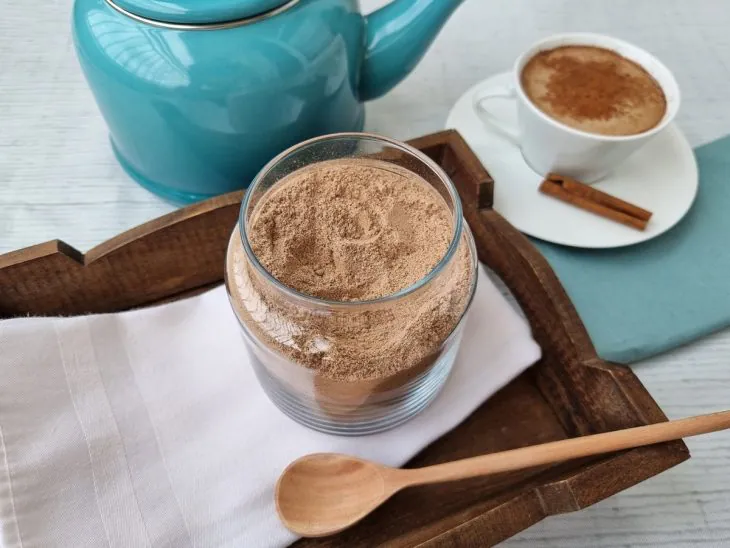

57 receitas com frango que são deliciosas e fáceis de preparar
42 receitas com peito de frango práticas e irresistíveis
32 receitas de filé de frango para variar o cardápio do dia a dia
10 receitas de fricassê de frango cremoso que fazem sucesso na mesa
Capuccino caseiro
Ingredientes
Modo de preparo

Reúna todos os ingredientes;

Em um liquidificador, coloque todos os ingredientes;Bata até virar um pó bem fininho;

Despeje com cuidado e guarde em um pote bem vedado;

Agora está pronto para consumir! Coloque 2 ou 3 colheres para 230ml de leite aquecido e é só saborear;
 57 receitas com frango que são deliciosas e fáceis de preparar
57 receitas com frango que são deliciosas e fáceis de preparar
 42 receitas com peito de frango práticas e irresistíveis
42 receitas com peito de frango práticas e irresistíveis
 32 receitas de filé de frango para variar o cardápio do dia a dia
32 receitas de filé de frango para variar o cardápio do dia a dia
 10 receitas de fricassê de frango cremoso que fazem sucesso na mesa
10 receitas de fricassê de frango cremoso que fazem sucesso na mesa